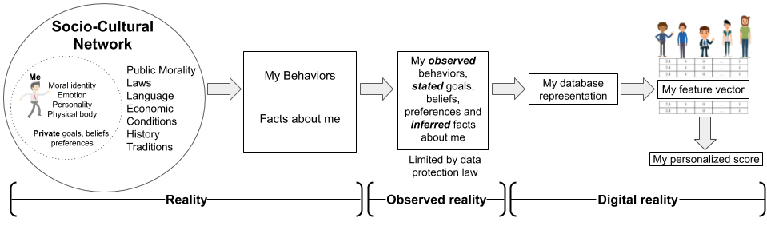
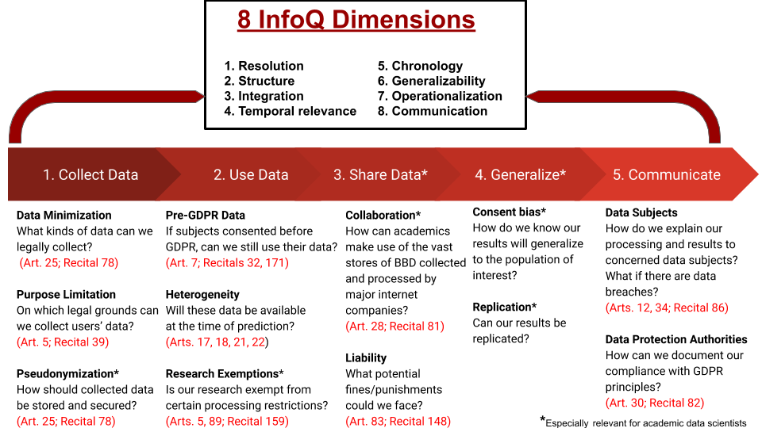
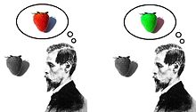

Writing

Respecting the person: How Personal is Machine Learning Personalization?
In this short piece, we look at what we call the “humanistic” view of the person, articulated by social psychologists, moral philosophers, and sociologists and contrast this with the machine learning (ML) view of the person. We argue that the ML version views a person as a “feature vector” and explain how this metaphor is problematic in light of the various humanistic views of the person. Here is a draft version also available on Arxiv. With this work we are hoping to broach a wider discussion about what it means to be a person and how machine learning techniques can better align with these views.
Hidden Inconsistencies Introduced by Predictive Algorithms in Judicial Decision Making
Here we argue that there are many new dangers in moving towards using predictive algorithms in the legal context. Most of the end users of these algorithms may not be aware of the many tacit assumptions of the data scientists who designed and tested these models. We point out four ways in which these algorithms may introduce inconsistencies into judicial decision-making. Here is a draft version.
Doing Data Science in the GDPR Era
If you’re more into data privacy and regulation, here you can download my MBA thesis which explains the history and law behind the GDPR and gives practical recommendations for corporate managers and academics on using personal data under the GDPR. For example, maybe you’ve wondered what’s new about the GDPR or how it compares with similar data regulation in the USA or China. The appendix contains useful checklists for academics, corporations, and managers who use personal data under the GDPR.
At which stages in the ML pipeline might the GDPR affect data scientists?

What are key concepts and definitions in the GDPR that affect data scientists?
And here is our (coauthored with Professor Galit Shmueli) paper from the journal Big Data, which details how the GDPR may affect the practice of data science.
Information, Experience, and the Knowledge Argument
 This was my Master’s thesis in philosophy of mind and cognitive science at San Francisco State University. Basically, I analyze Frank Jackson’s famous “Knowledge Argument” from his paper Epiphenomenal Qualia. I argued that human experience consists in three types of information: the phenomenal (the what it is like to experience something as an experiencer), the propositional (third-person scientific description of events), and indexical (a kind of orienting “meta-data” locating an experiencer in broader, public space and time). Using ideas borrowed from Kant’s Critique of Pure Reason, I claim that indexical information is necessary for experience to be considered experience as such, as it provides a coherent narrative structure.